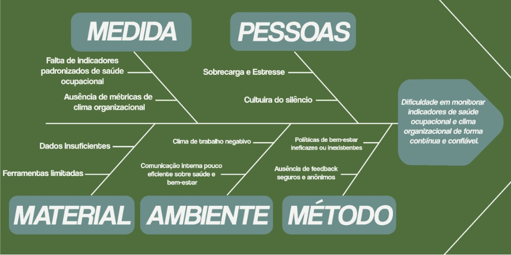

CENÁRIO ATUAL DO CLIENTE E DO NEGÓCIO
Introdução ao Negócio e Contexto
O mercado de saúde ocupacional e bem-estar corporativo tem crescido no Brasil, impulsionado pelo aumento de doenças relacionadas ao trabalho, como estresse, burnout, ansiedade e depressão. Segundo a Organização Mundial da Saúde (OMS), esses transtornos estão entre as principais causas de afastamento laboral no mundo, gerando impactos diretos na produtividade e nos custos das empresas. No cenário nacional, dados do Ministério da Previdência Social revelam que, somente em 2024, foram registrados quase meio milhão de afastamentos por questões de saúde mental.
Nesse contexto, destaca-se a atuação da professora Carla Sabrina Xavier Antloga, docente da Universidade de Brasília, psicóloga, mestre e doutora em Psicologia Social, do Trabalho e das Organizações, com foco em psicodinâmica do trabalho e qualidade de vida no trabalho. Suas pesquisas apontam que muitas empresas brasileiras ainda não possuem ferramentas digitais adequadas para monitorar de forma contínua o bem-estar dos colaboradores. Com base nessa constatação, identificou-se a oportunidade de desenvolver uma solução tecnológica inovadora, voltada a promover ambientes laborais mais saudáveis e sustentáveis.
Identificação da Oportunidade ou Problema
As empresas enfrentam dificuldades em diagnosticar e agir sobre os fatores que afetam na qualidade de vida no trabalho, como por exemplo:
- Afastamentos por doenças ocupacionais;
- Produtividade reduzida e queda no engajamento;
- Falta de indicadores que possam mensurar o clima organizacional;
- Resistência de gestores e colaboradores em falar sobre saúde laboral;
- Risco de retaliações, caso os feedbacks não sejam anônimos.
Esses problemas comprometem a experiência dos empregados e a sustentabilidade do negócio, desestimulando a imagem da empresa, sua capacidade de produção e seus lucros.

Desafios do Projeto
Do ponto de vista técnico, há a necessidade de: criar uma plataforma que seja acessível em diferentes dispositivos móveis em conformidade do a LGPD, assegurar o anonimato dos colaboradores ao responderem aos questionários, e também transformar os dados das respostas em informações claras e visuais por meio de dashboards interativos voltados para gestores e/ou setores responsáveis.
Existem também outros desafios, como estimular a participação frequente dos trabalhadores no preenchimento dos questionários, adaptar a ferramenta para atender pequenos e grandes negócios, e integrar a solução aos processos de gestão.
Além disso, o desafio de conseguir coletar, tratar, visualizar e comparar dados de saúde laboral dentro das empresas ou organizações, e indicar possíveis planos de ação (tanto para gestores quanto para os próprios funcionários) também é de grande importância
Segmentação de Clientes
Pretende-se atender quatro principais diferentes perfis de clientes:
-
Gestores de empresas: Orientados por resultados e indicadores de desempenho, os gestores buscam ferramentas que entreguem dados claros e acionáveis sobre o clima organizacional para melhorar a produtividade e justificar investimentos. Essa necessidade de visão estratégica e experiência consolidada para tomar decisões de impacto possuem uma faixa etária, que geralmente se concentra entre 35 e 60 anos, período que corresponde ao auge de carreiras de liderança;
-
Colaboradores: Representando o público mais diverso, este grupo busca um canal simples, rápido e, acima de tudo, anônimo para expressar suas percepções sobre o trabalho. A confiança na segurança da ferramenta é crucial para sua adesão, é o público alvo do projeto . Por abranger toda a força de trabalho ativa , sua faixa etária é a mais ampla, indo de 18 a 65 anos, englobando diferentes gerações com variados níveis de familiaridade tecnológica e expectativas sobre o ambiente corporativo;
-
Consultores e psicólogos: São especialistas que irão utilizar a ferramenta como uma fonte de dados estruturados para validar diagnósticos, fundamentar relatórios técnicos e otimizar seus projetos de intervenção. A exigência de alta qualificação técnica e experiência prática para atuar nessa área concentra esses profissionais na faixa etária de 30 a 55 anos, período em que já consolidaram seu percurso acadêmico e profissional;
-
Agentes de recursos humanos: Atuando como elo tático entre a gestão e os colaboradores, os profissionais de RH precisam de dashboards e relatórios objetivos para monitorar indicadores de bem-estar de forma proativa. Eles usam os dados para planejar ações e justificar a necessidade de novos programas. A faixa etária abrange de 25 a 50 anos.
Histórico de Versão
| Data | Versão | Descrição | Autor |
|---|---|---|---|
| 15/09/25 | 1.0 | Criação do Documento e documentação | Pablo Cunha |
| 25/09/25 | 1.1 | Alterações no documento | Pablo Cunha |